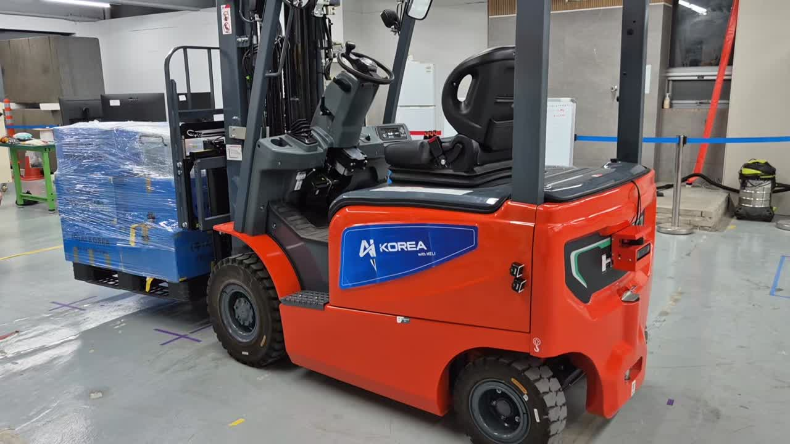

먼저 비교했습니다.
시뮬레이션에서 자율주행 구성을 비교하고, 실제 적용을 위한 주행 소프트웨어를 개발했습니다.
실제 로봇에 맞춘 제어기부터
센서와 모터, 학습 모델을 연결하는 시스템까지.
현장에서 작동하는 로봇을 만드는 유영훈입니다.

ISAAC SIM → ROS 2 → REAL ROBOT문제를 정의하고, 대안을 비교하고, 실기로 검증한 기록.
프로젝트 개요와 실제 동작 영상을 함께 담았습니다.
프로젝트 5개
대표 사례 / 지게차 주행 제어
환경의 차이를 진단하고 제어기 설계에 반영한 과정입니다.
시뮬레이션에서 자율주행 구성을 비교하고, 실제 적용을 위한 주행 소프트웨어를 개발했습니다.
실제 장비와 연결한 뒤 주행을 평가하고, 시뮬레이션과 실환경 사이에서 발생하는 차이를 분석했습니다.
실제 구동 특성을 고려한 NMPC를 구현하고, 제한된 컴퓨팅 환경에서 동작하도록 최적화와 실차 검증을 진행했습니다.
에이아이코리아에서 약 1년간 자율주행·제어 시스템을 개발했습니다. 시뮬레이션에서 검증한 기능을 실제 하드웨어에 연결하고, 그 사이에서 발생하는 문제를 해결해 왔습니다.
이제 자율주행과 Physical AI 분야에서, 이동과 조작·학습을 실제 로봇의 행동으로 연결하는 일을 이어가고 싶습니다.
경력 요약 및 인쇄 ↗ROS 2 · Nav2 · NMPC · Isaac Sim
MCU firmware · CAN / CANopen · 센서·구동부 통합
카메라 보정 · Hand–eye calibration · 비전 기반 제어
LeRobot · Demonstration dataset · ACT 학습·실기 실험